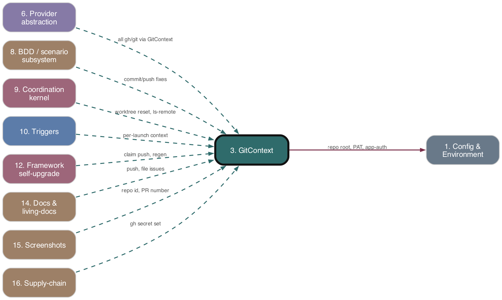

Subsystem 03 of 16
GitContext
As-is reference. Ground truth: source code.

Purpose
GitContext is the single deep-module authority for all git and gh I/O in ADW. It answers two questions per operation correctly and unambiguously: which repo's filesystem (base path / cwd) and which repo's auth (token + git identity). Base-path resolution lives only in its constructor; auth is injected per spawned command via the child-process environment — never by mutating process.env. The package (adws/gitContext/) is dependency-injectable and carries no ADW globals; ADW-specific wiring lives in adapter/factory layers outside the package.
Responsibilities
- Construct from a mandatory identity (
owner,repo,selfHost,token,gitIdentity,frameworkRepoRoot,targetReposDir); incomplete/empty identity is a hard construction error (assertCompleteIdentity). - Resolve base path once:
selfHost→frameworkRepoRoot; target →join(targetReposDir, owner, repo). No optional base path, nocwdfallback. - Route every git/
ghcall through one private#run()chokepoint that injectsGH_TOKEN(or PAT) +GIT_AUTHOR_*/GIT_COMMITTER_*into the child env over a copy ofprocess.env, with explicitcwd. - Branch ops (current/delete local+remote, merge-from-default, fetch-and-reset), commit/push ops (force-with-lease push with stale-lease detection, commit, head-tree-hash, dirty check), worktree create/ensure/query/list/remove/reset/path-lookup, and
ghissue/PR/label/Projects-V2-board operations. - Worktree-path computation (
worktreePathFor→join(basePath, '.worktrees', sanitizedBranch)), env-file copy into worktrees, and process-kill cleanup before worktree removal. - Pure command-string builders (issue/PR/label/board) live in
commands/; package-private ops modules take an injected runner so they are testable without a real context. - Boundary wiring: build exactly one context per process launch from launch identity; cross-check launch identity against persisted state (detect, not silently resolve).
Key Files
| Path | Role |
|---|---|
| --- | --- |
adws/gitContext/gitContext.ts |
The GitContext class — constructor, identity assertion, base-path resolve, #run chokepoint, commandEnv, all public methods |
| --- | --- |
adws/gitContext/types.ts |
GitContextOptions, GitIdentity, GitContextDeps, ExecFn, FsDeps |
| --- | --- |
adws/gitContext/index.ts |
Standalone public surface (exports GitContext, types, killProcessesInDirectory) — no free git/gh functions |
| --- | --- |
adws/gitContext/branchOps.ts |
Branch op orchestration; PROTECTED_BRANCHES (main/master/develop) guard |
| --- | --- |
adws/gitContext/commitOps.ts |
Commit + --force-with-lease --force-if-includes push; isLeaseRejection stale-lease detection |
| --- | --- |
adws/gitContext/worktreeCreateOps.ts |
create / createForNewBranch / ensure; branch-checked-out-elsewhere + free-from-main-repo logic; env copy |
| --- | --- |
adws/gitContext/worktreeQueryOps.ts |
listWorktrees, findWorktreeForIssue, getWorktreeForBranch (porcelain parsing) |
| --- | --- |
adws/gitContext/worktreeRemoveOps.ts |
removeWorktree / removeWorktreesForIssue with prune+rm fallback |
| --- | --- |
adws/gitContext/worktreeResetOps.ts |
Takeover reset: abort merge/rebase, fetch + reset --hard origin/branch + clean -fdx |
| --- | --- |
adws/gitContext/processCleanup.ts |
killProcessesInDirectory via lsof +D → SIGTERM/SIGKILL |
| --- | --- |
adws/gitContext/commands/{issue,pr,label,board}Commands.ts |
Pure gh command-string builders + board GraphQL queries/parsers |
| --- | --- |
adws/core/launchGitContext.ts |
Boundary adapter buildLaunchGitContext(targetRepo, deps); token + git-identity resolution chains |
| --- | --- |
adws/github/gitContextFactory.ts |
Factory gitContextFor/gitContextForSync/gitContextForRepo; self-host owner/repo cache |
| --- | --- |
adws/core/repoIdentityCrossCheck.ts |
crossCheckRepoIdentity, RepoIdentityMismatchError, sameRepoIdentity |
| --- | --- |
adws/checkGitGhGuard.ts |
CI guard (AST scan) failing the build on direct git/gh shell-outs outside the package + allowlist |
| --- | --- |
adws/vcs/index.ts (+ branchOperations, branchIdentity, worktreeOperations, worktreeProbe, worktreeReuseGate) |
Legacy/residual: pure branch-name vocabulary, deterministic branch-name fallback, getMainRepoPath, worktree probe/reuse-decision helpers |
Behavior & Flows
- Construction:
assertCompleteIdentityrejects emptyowner/repo/token/frameworkRepoRoot/targetReposDir, non-booleanselfHost, and any emptygitIdentityfield;resolveBasePaththen fixes base path immutably.deps.exec/deps.fsDepsdefault to realexecSyncwrapper / realfs. - Per-command auth:
commandEnvoverlays token + git identity onto a base env;#runpassescwd ?? basePath, the overlaid env, and optional stdininput, trimming output. PAT path (usePat) used forapprovePR(bot self-approval forbidden),runGraphQL, and allmoveIssueToStatusboard calls (App tokens lack Projects V2 on user repos). - Worktree create: ensures
.worktrees/dir; resolves branch existence (local →origin/→ fetch); if checked out in main repo, auto-commits WIP + pushes + checks out default branch to free it; if checked out elsewhere, reuses; elsegit worktree add(existing branch) oradd -b … origin/base(new).ensureWorktreereuses existing and copies.env/.env.localin. - Push:
pushBranchdoes a best-effort fetch then force-with-lease; on lease rejection (stale info/remote ref updated since checkout) throws a guidance error rather than blindly retrying (PRD story 3). - Takeover reset:
resetWorktreeresolves git-dir, aborts in-flight merge/rebase (git command then fs fallback), fetches and hard-resets toorigin/branch, cleans untracked. - Board move:
moveIssueToStatuschains project-id → item → status-field queries, fuzzy-matches the target option, short-circuits if already at status, swallows parse/exec failures tofalse. - Boundary:
buildLaunchGitContextdiscriminates on--target-repopresence (target → context undertargetReposDir; null → self-host from local remote viagetRepoInfo); token chain App-installation →GITHUB_PAT→gh auth token→GH_TOKEN(throws if none); identity chain App-slug bot →GIT_*env →git config→ built-inADW Bot. - Cross-check:
workflowInitderives launch identity from the context, writesrepoIdentityinto top-level state, and callscrossCheckRepoIdentity(launch, persisted); mismatch throwsRepoIdentityMismatchError(launch boundary is authoritative; missing persisted field is harmless — no backfill). - Guard:
checkGitGhGuardAST-scans all sources (skippingadws/gitContext/**, tests, node_modules, plus a justifiedALLOWLIST) and exits 1 on any call whose first arg string matches^(git|gh)(\s|$).
Data Structures
GitContextOptions—owner,repo,selfHost: boolean,token,gitIdentity: GitIdentity,frameworkRepoRoot,targetReposDir, optionalpat.GitIdentity—authorName/authorEmail/committerName/committerEmail.GitContextDeps— optionalexec: ExecFn,fsDeps: FsDeps(injection seams).ExecFn—(command, { cwd, env, input? }) => string.WorktreeForIssueResult—{ worktreePath, branchName }.RepoIdentity(agentTypes.ts) —{ owner, repo }; persisted onAgentState.repoIdentity; distinct fromGitIdentityand providerRepoIdentifier.PROTECTED_BRANCHES=['main','master','develop'].
Public Interface
- Class
GitContext: gettersbasePath/owner/repo/selfHost;worktreePathFor,commandEnv,defaultBranch. - Branch:
getCurrentBranch,mergeLatestFromDefaultBranch,fetchAndResetToRemote,deleteLocalBranch,deleteRemoteBranch. - Commit/push:
commitChanges,pushBranch,getHeadTreeHash,hasUncommittedChanges. - Worktree:
createWorktree,createWorktreeForNewBranch,ensureWorktree,getWorktreeForBranch,listWorktrees,findWorktreeForIssue,removeWorktree,removeWorktreesForIssue,resetWorktree,copyEnvToWorktree. - GitHub issue:
fetchIssue,commentOnIssue,issueState,closeIssue,issueTitle,fetchIssueComments,issueHasLabel,addIssueLabel,createIssue,updateIssueBody,findOpenUpgradeIssue,deleteIssueComment,authenticatedUser. - GitHub PR:
findPRByBranch,fetchPRDetails,fetchPRReviews,fetchPRReviewComments,commentOnPR,mergePR,approvePR,prApprovalState,fetchPRList,fetchAllPRs,createPR. - Label/board:
createLabel,applyLabel,runGraphQL,moveIssueToStatus. - Adapters/helpers:
buildLaunchGitContext,gitContextFor/gitContextForSync/gitContextForRepo,crossCheckRepoIdentity,killProcessesInDirectory.
Dependencies
- Upstream (depends on):
- 1. Config & Environment —
REPO_ROOT,TARGET_REPOS_DIR,GITHUB_PATinjected at the boundary. - GitHub App auth (
githubAppAuth.ts) for installation-token minting;getRepoInfofor self-host owner/repo. - Node
child_process(execSync),fs,path;lsoffor process cleanup. core.log(used by worktree create/remove ops for logging only).- Downstream (depended on by):
- 7. Phases & orchestrators — every phase receives the threaded
GitContextand performs all git/ghthrough it. - 10. Triggers — cron/webhook/takeover/cancel handlers construct and thread contexts per process/event.
- 6. Provider abstraction — GitHub code-host & board-manager providers delegate to context factories.
- 2. State & ADW ID —
repoIdentitypersisted into top-level state for cross-check.
Interactions
| Other subsystem | Direction | What is exchanged |
|---|---|---|
| --- | --- | --- |
| 1. Config & Environment | depends-on | REPO_ROOT, TARGET_REPOS_DIR, GITHUB_PAT, App auth config injected at construction |
| --- | --- | --- |
| 2. State & ADW ID | called-by / writes | launch RepoIdentity persisted to top-level state; read back as cross-check |
| --- | --- | --- |
| 4. Agent execution | provides | base path / worktree cwd and env for agent subprocesses (getMainRepoPath) |
| --- | --- | --- |
| 6. Provider abstraction | called-by | code-host/board providers call gitContextFor* factories for git/gh ops |
| --- | --- | --- |
| 7. Phases & orchestrators | called-by | threaded context performs all branch/commit/worktree/issue/PR ops |
| --- | --- | --- |
| 10. Triggers | called-by | cron/webhook/takeover build per-launch/per-event contexts; cross-repo isolation |
| --- | --- | --- |
| 11. Auto-merge / HITL + resilience | called-by | PR merge/approve, worktree reset on takeover, board status moves |
| --- | --- | --- |
| 12. Framework self-upgrade | called-by | findOpenUpgradeIssue, upgrade-claim git ops (allowlisted bootstrap path) |
| --- | --- | --- |
| 16. Supply-chain | enforced-by | checkGitGhGuard CI rule forbids direct git/gh outside the package |
PRD Divergences
- Two boundary builders, not one. The PRD specifies a single launch-boundary adapter; the code ships both
buildLaunchGitContext(core/launchGitContext.ts) and a parallelgitContextFactory.ts(gitContextFor*,gitContextForRepowith a module-level self-host owner/repo cache). Their token/identity resolution chains overlap but are duplicated, not shared. - Transitional global auth still present. The PRD calls for removing process-global token mutation;
buildLaunchGitContext's doc comment acknowledgesactivateGitHubAppAuth()is still invoked at process entry to provision not-yet-migrated consumers (vcs ops, agent subprocess), so the global is retired only on the hot path, not eliminated. - Guard is allowlist-gated, migration incomplete. The enforcement guard ships, but
ALLOWLISTcarries ~25 paths including a "residual — migrate to GitContext (follow-up)" category (e.g.vcs/branchOperations.ts,triggers/autoMergeHandler.ts), so "no context-free git/gh exists" is not yet fully true. selfHostdiscriminator caveat.buildLaunchGitContextderivesselfHostpurely from--target-repopresence; a--target-repopointing at the framework repo itself is treated as target (base path undertargetReposDir), documented in-code as intentional but a deviation from a strict "is this our own repo" reading.- Otherwise matches PRD intent: mandatory identity, single constructor base-path resolution, per-command env injection, cross-check-not-source-of-truth persistence, no backfill migration.